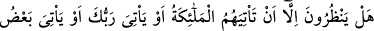
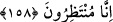

KIYÂMET ALÂMETLERİ
158. Onlar ancak kendilerine meleklerin gelmesini veya Rabbinin gelmesini yahut
Rabbinin bazı alâmetlerinin gelmesini bekliyorlar. Rabbinin bazı alâmetleri geldiği
gün, önceden inanmamış ya da îmanında bir hayır kazanmamış olan kimseye artık
îmanı bir fayda sağlamaz. De ki: Bekleyin, şüphesiz biz de beklemekteyiz!
Âyette sanki şöyle denilmektedir: “Ben Mekke halkına bütün delilleri getirdim ve
Kitab’ı (Kur’an’ı) indirdim. Ama îman etmediler. Şu halde “onlar ille kendilerine
meleklerin” ruhlarını kabzetmek üzere ölüm meleği ile yardımcılarının “gelmesini,
yahut Rabb’inin” azab ve intikam emrinin “gelmesini” mi bekliyorlar?
Begavî der ki: “Yahut” kıyamet günü hüküm vermek üzere keyfiyetsiz olarak
“Rabb’inin gelmesini mi bekliyorlar?” demektir.
Ya da Rabb’in gelmesinden maksat, bütün âyetlerin yani kıyamet ve tamâmen helaka
dair alametlerin gelmesidir. Nitekim âyetin devamı buna işaret etmektedir:
“Ya da Rabb’inin bazı ayetlerinin gelmesini” kıyamet alametlerini “mi
bekliyorlar?” O alametler, duhan (duman), dâbbetü’l-arz, doğuda-batıda ve Arap
yarımadasında birer yerin batması, deccal, güneşin batıdan doğması, Ye’cüc ve
Me’cûc’ün zuhûru, İsa (a.s.)’ın nüzûlü ve Adn diyarında bir ateş ortaya çıkmasıdır.
Onlar inanmak için üç şeyin, yani meleklerin, Rabb’inin ya da Rabb’inden kahredici
bazı alametlerin gelmesini beklemiyorlardı. Ancak bekleyen kimselere gelip çattığı
gibi, onlara gelip çatacağı için onlar bekleyenlere benzetildiler.
“Ama Rabb’inin bazı âyetleri geldiği gün, daha önce inanmamış ya da îmanında bir
hayır kazanmamış olan kimseye, artık inanması bir fayda sağlamaz.”
Ölüm döşeğindeki hastanın îman etmesinin bir hükmü ve faydası olmadığı gibi bu
alâmetleri görüp de inanan kimsenin îmanı da fayda vermez. Çünkü alametlerini gören,
kıyâmetin kendisini görmüş demektir. Onları gözle görmek, îmânın kabûlüne manidir.
Îman, ancak gayba îman olduğu takdirde makbul ve muteberdir.
Âyetten, salih amel olmadan îmanın fayda sağlamayacağı neticesi çıkarılabilir. Ancak
Ehl-i sünnet’in görüşüne göre böyle bir îman sahibine fayda verecektir. Çünkü böyle bir
îmana sahip olan kimse, ebedî olarak cehennemde kalmayacaktır.
Üsküdarî diye meşhur olan Şeyh Hüdayi Hazretleri el-Vakıât adlı eserinde der ki: